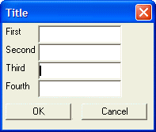

{INITIAL_FOCUS}
Syntax
{INITIAL_FOCUS}
Description
By default the control that has focus when a dialog is opened is the first control on the dialog, however, you may specify a different control. The {INITIAL_FOCUS} command precedes the control that should have initial focus.
Limitations
Desktop applications only
Example
Here is an example where the third edit control in this dialog box gets the initial focus:
|
ui_dlg_box("Title",<<%dlg% {region} First|[.20first]; Second |[.20second]; Third |{initial_focus}[.20third]; Fourth|[.20fourth] {endregion}; {region} <*15&OK> <15&Cancel> {endregion} %dlg% ) if result = "&OK" then script_play(script) end if |
Note that the third control has focus.

See Also